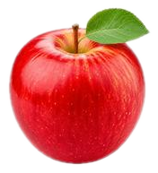
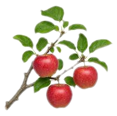
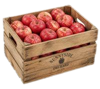

Da dove viene
questa mela?

?
?
?
Oggi può dirtelo lei.
ogni anno, tra raccolta e vendita
0
%
del cibo si perde
per frutta e verdura
0
%
Fonte: FAO, indicatore SDG 12.3.1 (dati 2023)
Rintracciare è
già un obbligo
fornitore
tu
cliente
un passo
indietro
un passo
avanti
Il digitale lo rende istantaneo.
Reg. (CE) 178/2002, art. 18
CASO STUDIO · ESEMPIO
La filiera della mela

IoT
1 · CAMPO
Sensori IoT
misurano suolo, meteo e irrigazione

LOTTO
042
raccolta
06/09
2 · RACCOLTA
Codice QR o RFID
su ogni cassa: il lotto ha un'identità
AI
calibro ✓
colore ✓
difetti ✓
shelf life stimata
3 · SELEZIONE
Intelligenza artificiale
controlla calibro, colore e difetti
e stima la shelf life
catena del freddo ✓
4 · TRASPORTO
Sensori a bordo
registrano la catena del freddo
lungo tutto il viaggio
Lotto 042
Campo
Raccolta
Selezione AI
Trasporto
Al tuo scaffale ✓
5 · SCAFFALE
Basta uno scan
e il consumatore legge
la storia del frutto
il test Walmart-IBM con blockchain
7 giorni
2,2 secondi
il tempo per risalire all'origine
di un lotto di mango
Fonte: LF Decentralized Trust, caso Walmart-IBM
Il mercato della
tracciabilità alimentare
$
0
mld
2024
$
0
mld
2029
+10,1% l'anno
Fonte: BCC Research, giugno 2025 (previsione)
La tua filiera
è pronta a
raccontarsi?
Segui Food Hub: le innovazioni dell'agrifood, prima degli altri.
Food Hub